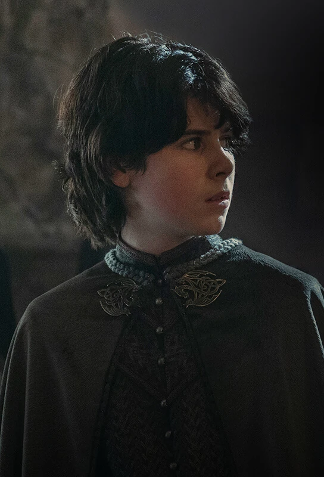

Núcleo Targaryen
Lucerys Velaryon
Vai como emissário a Ponta Tempestade. Morre com Arrax após a perseguição de Aemond e Vhagar.
Conteúdo até a temporada 1, episódio 10.
Ver Mapa de Conexões →HISTÓRICO DO PERSONAGEM
Temporada 1
Acompanhe os acontecimentos registrados até o episódio escolhido.
Episódio 06 — The Princess and the Queen
Segundo filho de Rhaenyra e Laenor. Sua origem é questionada por adversários da mãe.
Episódio 07 — Driftmark
Fere Aemond na luta em Derivamarca, causando a perda do olho do tio.
Episódio 08 — The Lord of the Tides
Com Corlys gravemente ferido, Vaemond contesta a posição de Lucerys. Rhaenyra procura o apoio de Rhaenys e propõe uniões entre seus filhos e as netas dela.
Episódio 10 — The Black Queen
Vai como emissário a Ponta Tempestade. Morre com Arrax após a perseguição de Aemond e Vhagar.
Personagens relacionados
- Aemond TargaryenConfronto e perda do olho
- Borros BaratheonRecebe o emissário
- Rhaenyra TargaryenMãe e filho
- Laenor VelaryonPai legal
- ArraxCavaleiro / dragão
- Rhaena TargaryenNoivado